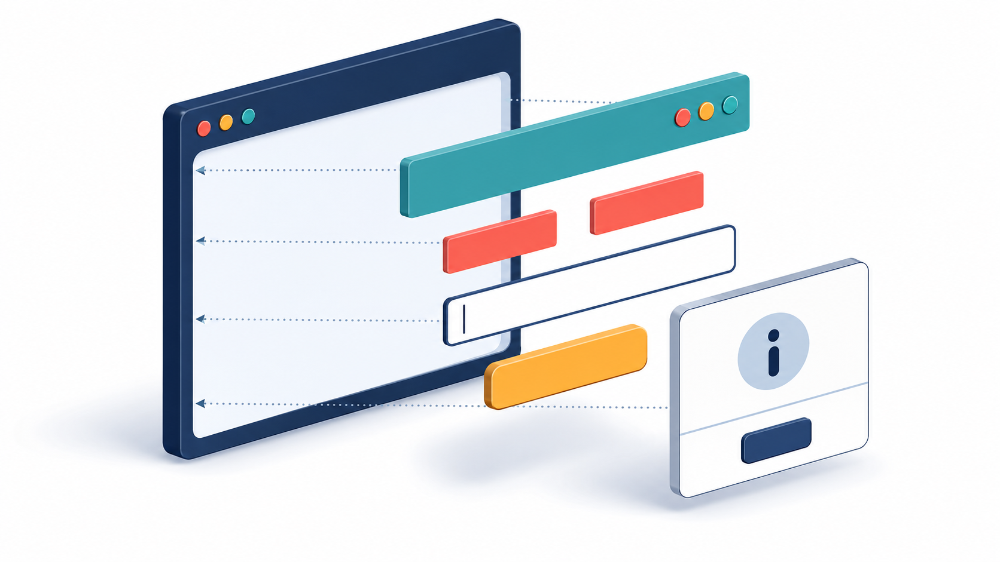

Core concept
What is Java Swing?
Swing is Java's toolkit for building graphical desktop applications. Instead of interacting only through text in the console, users can click buttons, type in fields, select choices, and work with windows.
Enter your name: Ana Hello, Ana!
Input and output are plain text.
Users interact with visual components.
Platform independent
The same Java program can run on Windows, macOS, and Linux when Java is installed.
Component based
Build an interface from reusable pieces such as labels, buttons, fields, and panels.
Event driven
The program waits for user actions, then runs the code attached to those events.
Before coding
Prepare your tools
Students need the Java Development Kit and a code editor or IDE. Complete this check before writing the first program.
Install a recent JDK
Use JDK 17 or newer. The JDK includes the compiler and runtime tools.
java --versionChoose an editor
Use IntelliJ IDEA, Apache NetBeans, Eclipse, or VS Code with Java extensions.
Create the project file
Create a Java project, then add FirstSwingApp.java.
Compile and run
Use the Run button, or these terminal commands:
javac FirstSwingApp.java
java FirstSwingAppVisual model
Anatomy of a Swing interface
Think of a Swing interface as a container holding smaller containers and controls. This parent–child relationship is the component hierarchy.

Code along
Create the first window
Copy the complete program, run it once, and then study each numbered idea below.
import javax.swing.*;
public class FirstSwingApp {
public static void main(String[] args) {
SwingUtilities.invokeLater(() -> {
JFrame frame = new JFrame("My First Swing App");
JLabel label = new JLabel(
"Hello, Swing!", SwingConstants.CENTER
);
frame.add(label);
frame.setSize(420, 240);
frame.setDefaultCloseOperation(JFrame.EXIT_ON_CLOSE);
frame.setLocationRelativeTo(null);
frame.setVisible(true);
});
}
}Expected behavior: a 420 × 240 window opens in the center of the screen and displays “Hello, Swing!”.
Import Swing classes. The asterisk makes classes in javax.swing available.
Use the event thread. invokeLater schedules interface creation safely.
Create and configure. Give the frame content, size, close behavior, and position.
Show it last. setVisible(true) displays the completed window.
A centered desktop window
If nothing appears, confirm that setVisible(true) is the final setup call.
Building blocks
Essential Swing components
JLabelDisplays short text or an image.
JButtonRuns an action when clicked.
JTextFieldAccepts one line of text.
JCheckBoxToggles an independent choice.
JComboBoxSelects one item from a list.
JTextAreaAccepts multiple lines of text.
Automatic arrangement
Layout managers
A layout manager decides how components are sized and positioned when a window changes size. Avoid fixed coordinates because they break on different screens.
FlowLayout
Places components left to right and wraps them when needed.
BorderLayout
Divides space into five useful regions.
GridLayout
Creates equal cells in rows and columns.
| Use case | Good first choice | Why |
|---|---|---|
| Simple button row | FlowLayout | Natural left-to-right flow |
| Application shell | BorderLayout | Header, content, and side areas |
| Small data form | GridLayout | Clean label-and-field alignment |
Make it respond
Event handling
An event is something that happens, such as a click. A listener waits for it, and an event handler contains the response.
greetButton.addActionListener(event -> {
String name = nameField.getText().trim();
resultLabel.setText("Welcome, " + name + "!");
});Try it: change the name, then click Greet student. The preview follows the Java listener logic.
Guided project
Build a Student Greeter
This small project combines a frame, panel, label, text field, button, layout manager, and event listener.
Ask for a student's name and show a personalized welcome message.
- One text field
- One button
- Input validation
- Responsive layout
import javax.swing.*;
import java.awt.*;
public class StudentForm {
public static void main(String[] args) {
SwingUtilities.invokeLater(() -> {
JFrame frame = new JFrame("Student Form");
JPanel panel = new JPanel(new GridLayout(3, 2, 10, 10));
JLabel nameLabel = new JLabel("Student name:");
JTextField nameField = new JTextField();
JButton greetButton = new JButton("Greet student");
JLabel resultLabel = new JLabel("Ready");
greetButton.addActionListener(event -> {
String name = nameField.getText().trim();
resultLabel.setText(name.isEmpty()
? "Please enter a name."
: "Welcome, " + name + "!");
});
panel.setBorder(BorderFactory.createEmptyBorder(20, 20, 20, 20));
panel.add(nameLabel);
panel.add(nameField);
panel.add(greetButton);
panel.add(resultLabel);
frame.add(panel);
frame.pack();
frame.setMinimumSize(new Dimension(460, 190));
frame.setDefaultCloseOperation(JFrame.EXIT_ON_CLOSE);
frame.setLocationRelativeTo(null);
frame.setVisible(true);
});
}
}Test both cases: enter a name for a welcome message, or leave the field empty to see the validation message.
Run and test
Apply and extend
Practice tasks
Change the window
Change its title to “My Student App” and its minimum width to 520 pixels.
Show hint
Look for new JFrame(...) and new Dimension(...).
Add a course field
Add a second label and text field, then include the course in the output message.
Show hint
Increase the grid rows and add the new components before the button.
Clear the form
Add a Clear button that empties the name field and resets the result to “Ready”.
Show hint
Call nameField.setText("") inside a second listener.
Check understanding
Quick knowledge check
Lesson recap